Cataloging
Before you start cataloging in Koha you’re going to want to do some basic setup. Refer to the Implementation checklist for a full list of these things. Most importantly you’re going to want to make sure that your MARC bibliographic frameworks are all defined the way you want. Once in the cataloging module you will not be able to add or remove fields and subfields so your frameworks must be ready before you start cataloging.
You can also use OCLC Connexion to send records directly in to Koha. For more information on that please review the OCLC Connexion Gateway setup Appendix.
Get there: More > Cataloging
Bibliographic records
In Koha the bibliographic record contains the main information related to the material. This includes things like the title, author, ISBN, etc. This information is stored in Koha in Marc (different flavors of Marc are supported in Koha). Once this information is saved, item records can be attached.
Adding records
Records can be added to Koha via original or copy cataloging. You can also choose to use the basic or advanced cataloging interface for all of your work.
If you would like to catalog a record using a blank template in the basic editor
Click ‘New record’

Choose the framework you would like to base your record on
Note
You can create or modify frameworks in the Administration module.
If you would like to catalog a record using a blank template in the advanced editor
Enable the EnableAdvancedCatalogingEditor preference
Click the ‘Advanced editor’ button

If you want to catalog a record based on an existing record at another library in the basic or advanced editor
Click ‘New from Z39.50/SRU’
Click on the arrow to pre-select a framework for your imported your catalog record (the Default framework is used if you do not make a selection).
Search for the item you would like to catalog
Note
If no results are found, try searching for fewer fields, not all Z39.50 targets can search all of the fields above.
Search targets can be altered by using the Z39.50 admin area.
The display of extra MARC fields and subfields can be configured via the AdditionalFieldsInZ3950ResultSearch preference.
From the results’ ‘Actions’ button you can view the MARC or Card view for the record or choose to import it into Koha.
Note
You can customize the columns of this table in the ‘Table settings’ section of the Administration module (table id: resultst).
If you don’t find the title you need in your Z39.50 search results you can click the ‘Try Another Search’ button at the bottom left of your results
Basic editor cataloging
In the basic editor once you’ve opened a blank framework or imported a record via Z39.50 you will be presented with the form to continue cataloging
If you would rather not see the MARC tag numbers you can change the value in your hide_marc system preference or each user can check the box next to ‘Show tags’ found under ‘Settings’.
To expand a collapsed tag click on the tag description
To get help from the Library of Congress on a MARC tag click the question mark (?) to the right of each field number
It is possible to change the source of the MARC documentation using the MARCFieldDocURL system preference
If you feel that this clutters the screen you can hide the question marks by unchecking the box next to the ‘Show MARC tag documentation links’ note found under ‘Settings’
Sometimes fields may not be editable due to the value in your BiblioAddsAuthorities system preference. If you have this preference set to not allow catalogers to type in fields controlled by authorities you may see a lock symbol to the left of the field.

If this icon appears you must click the icon to the right of the field to search for an existing authority.

From the results list click ‘Choose authority’ to bring that into your catalog record
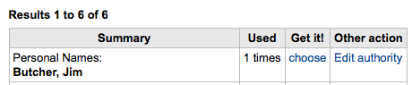
To duplicate a field click on the ‘repeat this tag’ icon to the right of the tag

To move subfields in to the right order, click the up arrow to the left of the field
To duplicate a subfield click on the clone icon (to remove a copied field, click the delete clone icon) to the right of the field

To remove a subfield (if there is more than one of the same type), click the - (minus sign) to the right of the field
To use a plugin click on the icon to the right of the field

Some fixed fields have editors that will change based on the material type you’re cataloging (for example the 006 and the 008 fields)
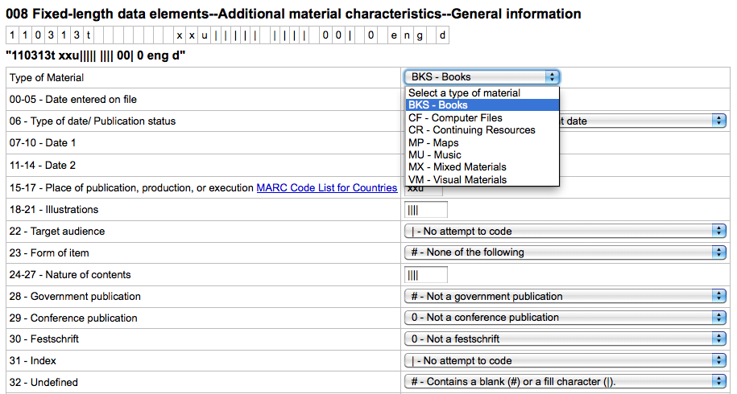
Once you’ve finished, click the ‘Save’ button at the top and choose whether you want to save and view the bib record you have created or continue on to add/edit items attached to the record
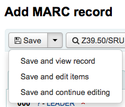
Choosing ‘Save and view record’ will bring you right to the record you just cataloged
Choosing ‘Save and edit items’ will bring you to the add/edit item form after saving the bib record so that you can attach holdings
Choosing ‘Save and continue editing’ will allow you to save your work so far and keep you in the editor to continue working
If you are about to add a duplicate record to the system you will be warned before saving

Advanced editor cataloging
In order to use the Advanced cataloging editor you need to enable the EnableAdvancedCatalogingEditor preference.
Note
This feature does not currently include any support for UNIMARC or NORMARC fixed fields.
In the advanced editor once you’ve opened a blank framework or imported a record via Z39.50 you will be presented with the form to continue cataloging

Using the search box on the left you can perform Z39.50 searches

And from those Z39.50 results you can view the marc record by clicking the link to the right

Clicking ‘Import’ will bring the record in to the editor where you can perform your edits
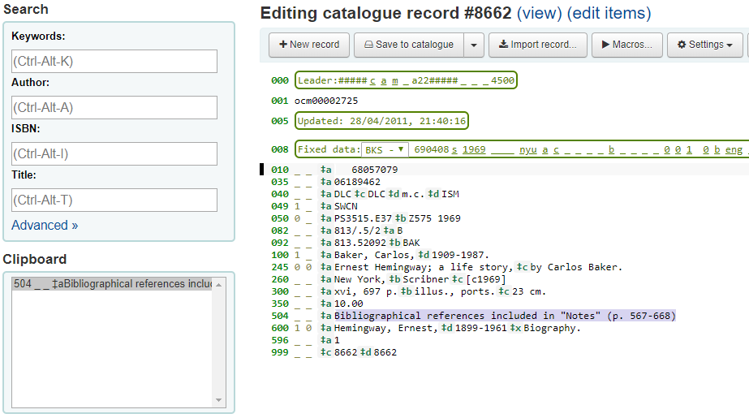
Note
When adding a new field in the Advanced Editor, you need to key underscores for a blank indicator, and surround the indicators with spaces.
Note
You need to key a space before the first subfield delimiter, but not before or after other subfield delimiters in the field.
At the bottom of the editor you will see help from the Library of Congress for the field you are on. In cases where your MARC is invalid you will see red highlighting. To edit the record using only keyboard functions the Keyboard shortcuts button will inform you of the necessary commands.
A clipboard is available to copy and paste text between fields. See the image and table below for the shortcuts used with the clipboard.

Advanced cataloging keyboard shortcuts
The following keyboard shortcuts can be used in the advanced cataloging module to save time and clicking.
Shortcut |
Behavior |
|---|---|
Ctrl-C |
Copy current field |
Shift-Ctrl-C |
Copy current subfield |
Ctrl-X |
Delete current field and copy to ‘clipboard’ |
Shift-Ctrl-X |
Delete current subfield and copy to ‘clipboard’ |
Alt-C |
Insert copyright symbol (©) |
Alt-P |
Insert copyright symbol (℗) (sound recordings) |
Ctrl-D |
Insert delimiter (‡) |
Ctrl-I |
Copy current field on next line |
Shift-Enter |
Insert line break |
Shift-Ctrl-L |
Link field to authorities |
Enter |
New field on next line |
Tab |
Move to next position |
Ctrl-P |
Paste selection from ‘clipboard’ |
Shift-Tab |
Move to previous position |
Ctrl-H |
Get help on current subfield |
Shift-Ctrl-K |
Toggle Keyboard |
Ctrl-S |
Save record (cannot be remapped) |
Advanced cataloging virtual keyboard

A virtual keyboard is available for adding diacritics and symbols. Use the shortcut Shift-Ctrl-K to display the keyboard. A ‘Keyboard layouts’ button will display at the top of the advanced editor that allows you to set the virtual keyboard layout for different languages.
Macros in advanced cataloging
To record a new macro:
Select the “Macros…” button
A window will pop up. In this window, select “New macro…,” key the new macro’s name in the pop-up box and select OK.
Now click to the right of the little number 1, and key the first line of your macro. For a multi-line, i.e., multi-field macro, hit the return key so that a little number 2 appears, and key the second line/field, etc.
Your macros will be automatically saved. When finished you can select the “x” to close the window, or select a macro to run on the record that you’re editing, or select another macro to run.
To edit an existing macro:
Select the “Macros…” button
A window will pop up. In this window, select the macro that you wish to edit & make your changes.
Your work will automatically be saved, and when finished you can select the “x” to close the window, or select a macro to run on the record that you’re editing, or select another macro to run.
The basic syntax of the macro language:
new 500=‡aEdited with Rancor
Creates a new 500 with a ‡a subfield and sets it to “Edited with Rancor”.
245c= by J.K. Rowling.
Sets the first ‡c subfield of the first 245 tag in the record to ” by J.K. Rowling”, creating it if necessary.
082a={084a}
Sets the ‡a subfield of the first 082 tag (creating the subfield if necessary) to the contents of the first 084‡a.
indicators=_1
Sets the indicators of the last mentioned tag (in this case, 082) to “_” and “1”.
new 090a=Z674.75.W67
Creates a new ‡a subfield on the first 090 (but only if that field already exists) and sets it to Z674.75.W67.
new 090a at end=Z674.75.W67
Same as above.
new 245b after a= a tale of might and magic /
Creates a new ‡b after the first a subfield and sets it to ” a tale of might and magic /”.
delete 245b
Deletes the first ‡b subfield on the first 245 to ‡b
Adding analytic records
Libraries sometimes make journal articles and articles within monographs and serials accessible to library patrons through analytics cataloging. Analytics cataloging creates separate bibliographic records for these articles, chapters, sections, etc. found within a larger resource such as a book, an article within a journal, newspaper or serial. In analytics cataloging, although a separate bib record is created for the title, it is not physically separated from the host item. Learn more about Analytics in Chapter 13 of AACR2.
If you would like to catalog analytic records there are two options. One is to use the Easy analytics funtion; the other is the Analytics enhanced workflow.
Easy analytics
The easy analytics feature makes linking analytic records together easier. The first thing you need to do is set the EasyAnalyticalRecords preference to ‘Display’ and the UseControlNumber preference to ‘Don’t use.’
After cataloging your analytic record (see adding records for more on creating records) click ‘Edit’ from the normal view and choose to ‘Link to host item’

This will prompt you to enter the barcode for the item this record should be linked to.
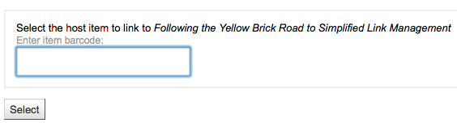
After entering the item’s barcode and clicking ‘Select’ you will receive a confirmation message.

The record will now have the 773 field filled in properly to complete the link.

To view all of the items tied to the host record, do a search for the record, click the ‘Analytics’ tab on the left and the analytics tied to each barcode will be shown under the ‘Used in’ column.

Note
It is also possible to create analytic records from this screen by clicking on ‘Create analytics’
You can also see the analytics attached to this record by clicking the ‘Show analytic’ link towards the top of the record in the normal view.

When looking at the analytic record you will also see a link to the host item under the ‘Host records’ column in the holdings table when viewing the ‘Analytics’ tab.

Analytics enhanced workflow
To use the enhanced workflow method of adding analytics, the first thing you need to do is set the EasyAnalyticalRecords preference to ‘Don’t display’ and the UseControlNumber preference to ‘Use.’
After cataloging your original record (see adding records for more on creating records) click ‘New’ from the normal view and choose to ‘New child record.’

This will open a new blank record for cataloging. The blank record will have the 773 field filled in properly to complete the link once the record is saved.
The ‘Show analytics’ link from the host record will now use the hosts record control number (001) to search for all records on the system of the type ‘mongragphic component part’ or ‘serial component part’ (Leader position 7) with a 773 subfield w that contains the hosts record control number.
Editing analytics
If you have linked an analytic record incorrectly you can remove that link by editing the analytic record (not the host record).
To do this, go to the analytic record and click the ‘Edit’ button. For UseControlNumber simply edit or remove the corresponding 773.
If using EasyAnalytics choose to ‘Edit items’; To the left of each item you will see two options.

Clicking ‘Edit in host’ will allow you to edit the item on the host record.
Clicking ‘Delink’ will remove the 773 field and the link between the analytic and the host.
Editing records
To edit a record you can click the ‘Actions’ button and choose ‘Edit biblio’ from the search results on the cataloging search page

or by clicking the Edit button on the Bibliographic Record and choosing ‘Edit Record’

The record will open in the MARC editor
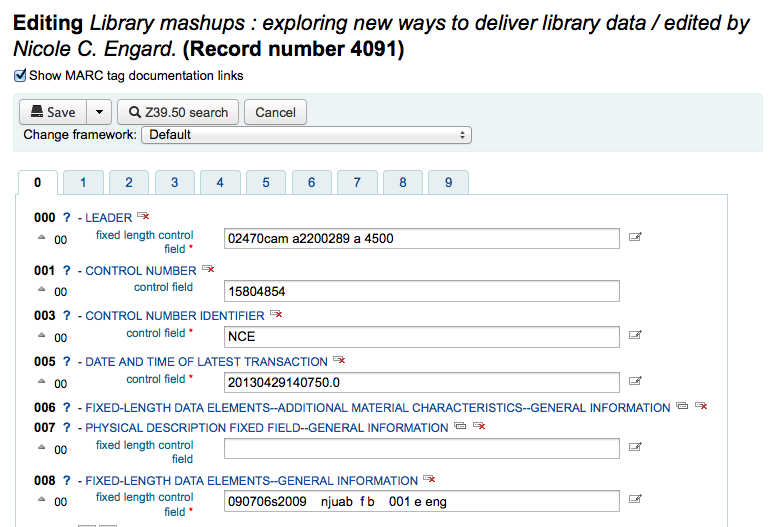
The alternative is to search via Z39.50 to overlay your record with a fuller record found at another library. You can do this by choosing ‘Replace record via Z39.50/SRU’ from the ‘Edit’ menu.
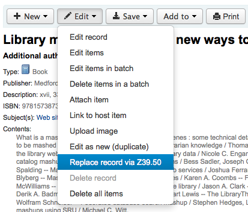
Once you choose that, you will be brought to a Z39.50 search window to search other libraries for the record in question.
Once you have made your edits (via either method) you can click ‘Save’ at the top left of the editor.
You can also use the edit menu to add your own custom cover image if you have either OPACLocalCoverImages and/or LocalCoverImages set to ‘Display’ by choosing ‘Upload image’ from the menu.

Choosing ‘Upload image’ will take you to the Upload Local Cover Image Tool.
Duplicating records
Sometimes a copy of the record you need to catalog can’t be found via Z39.50. In these cases you can create a duplicate of similar record and edit the necessary pieces to create a new record. To duplicate an existing record click ‘Edit as new (duplicate)’ from the ‘Edit’ menu on the bibliographic record.

This will open a new MARC record with the fields filled in with the values from the original bibliographic record.

Attaching files to records
If you would like to upload files to Koha you can do so with a few settings.
You will need to ask your system administrator to set the ‘upload_path’ config variable to point to where the files will be stored
You can see if your upload path is set correctly by visiting About Koha > System information. If there is an error you will see it there.

You will want to be sure that your OPACBaseURL system preference is set appropriately
You will want to add the upload.pl plugin to the 856$u subfield in one (or multiple) of your frameworks
Once you are all set up you can continue with cataloging as regular. You will see a plugin icon next to the 856$u that will open up the upload and/or search window
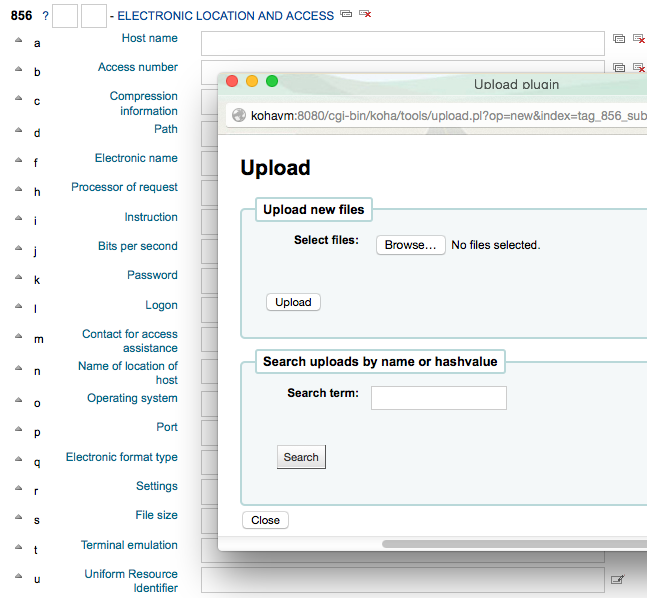
From this menu you can click browse to find a file and attach it, or you can search files you have uploaded previously using the search box. From the search results you can choose which file to attach.

Once the file is chosen it will appear as a link in the MARC record and on the detail display.

Note
If the file is a PDF, it will be opened directly in the user’s browser whereas if the file is an image or another type of file, the user will be prompted to download it.
Merging records
To merge bibliographic records together you will want to go to the Cataloging module and perform a search.
If you see duplicates on that search results screen you can check the boxes next to the duplicates and click the ‘Merge selected’ button at the top of the results.
Once you have selected the records you want to merge, click the ‘Merge selected’ button at the top of the list. You will be asked which of the records you would like to keep as your primary record and which will be deleted after the merge. If the records were created using different frameworks, Koha will also ask you what Framework you would like the newly merged record to use.

You will be presented with the MARC for all of the records (each accessible by tabs labeled with the bib numbers for those records). By default the entire first record will be selected, uncheck the fields you don’t want in the final (destination) record and then move on to the second tab to choose which fields should be in the final (destination) record.

Should you try to add a field that is not repeatable two times (like choosing the 245 field from both record #1 and #2) you will be presented with an error
Below the records you are merging is an option to enter fields to report on. This will allow you to control what fields you see on the merge confirmation page:

If you enter nothing you will be presented with a confirmation of biblionumbers only

If you enter fields you will see those on the confirmation page (you can set defaults with the MergeReportFields preference)

Once you have completed your selections click the ‘merge’ button. The primary record will now CONTAIN the data you chose for it as well as all of the items/holdings from both bib records, and the second record will be deleted.
Note
If you would like you can also use the Lists tool for merging records together. Learn more here.
Deleting records
To delete a bibliographic record simply choose the ‘Edit’ button and select ‘Delete record’
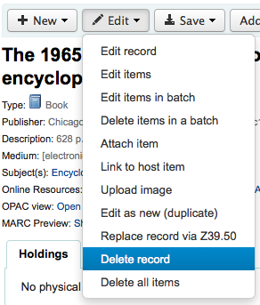
Bibliographic records can only be deleted once all items have been deleted. If you try to delete a bibliographic record with items still attached you will see that the delete option is grayed out.

Item records
In Koha each bibliographic record can have one or more items attached. These items are sometimes referred to as holdings. Each item includes information to the physical copy the library has.
Adding items
After saving a new bibliographic record, you will be redirected to a blank item record so that you can attach an item to the bibliographic record. You can also click ‘Add/Edit items’ from the cataloging search results
or you can add new item at any time by clicking ‘New’ on the bibliographic record and choosing ‘New item’

The item edit form will appear:

At the very least, if you plan on circulating the item, the following fields should be entered for new items:
2 - Source of classification
a - Permanent location
b - Current location
o - Full call number
If you’d like you can use the call number browser plugin for this field. If it’s enabled you’ll see a … to the right of the field. When clicked that will open a call number browser window if the row is highlighted in Red then the call number is in use, if there is a thin Green line instead then the call number can be used.
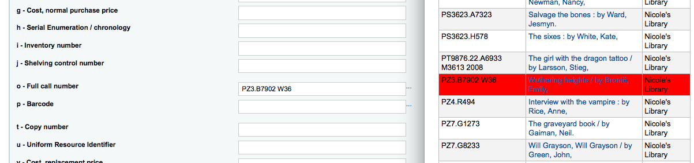
p - Barcode
v - Cost, replacement price
This value will be charged to patrons when you mark an item they have checked out as ‘Lost’
y - Koha item type
To make sure that these values are filled in you can mark them as mandatory in the framework you’re using and then they will appear in red with a ‘required’ label. The item will not save until the required fields are filled in.

Note
To make item subfields required in a framework you’ll want to edit the 952 field in the framework editor.
You can add a new authorized value directly from the add and edit item screen for any fields that are linked to authorized value categories such as Shelving location (subfield$c) or Collection code (subfield$8).
Start to type the authorised value description, if a match is not found you will see the option ‘(Select to create)’.
Click on this option to display a pop-up window where you can create you new authorized value.
The authorized value category will be pre-populated from the field you are using, for example LOC for Shelving location, CCODE for Collection code. Take care when choosing your authorized value code. Refer to the notes on adding new authorized values for the correct format of these codes. Use the Description field for the actual value that will be displayed
You can add authorized values in the same way from bibliographic and authority records.
注解
You must have the manage_auth_values administration permission to add authorized values from cataloguing.
Below the add form there are 3 buttons for adding the item.

‘Add item’ will add just the one item
‘Add & duplicate’ will add the item and fill in a new form with the same values for you to alter
‘Add multiple items’ will ask how many items and will then add that number of items adding +1 to the barcode so each barcode is unique
Your added items will appear above the add form once submitted

Note
You can customize the columns of this table in the ‘Table settings’ section of the Administration module (table id: Items Editor).
Your items will also appear below the bibliographic details on the bib record display.
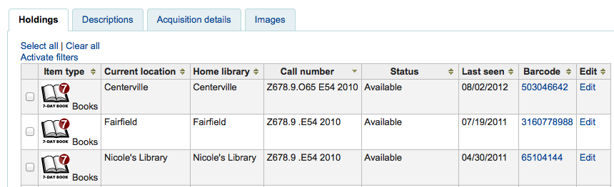
If you have SpineLabelShowPrintOnBibDetails set to ‘Display’ then there will also be a link to print a quick spine label next to each item.
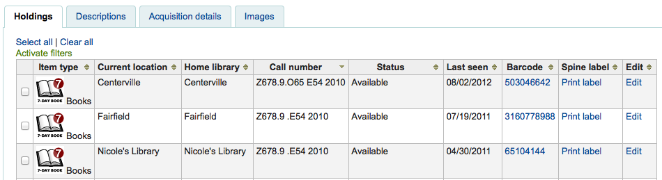
You can also filter the contents of your holdings table by clicking the ‘Activate filters’ links. This will show a row at the top where you can type in any column to filter the results in the table.
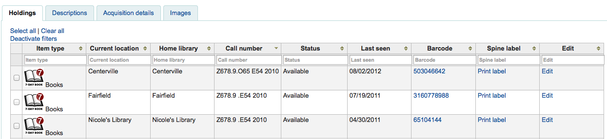
Editing items
Items can be edited in several ways.
Clicking ‘Edit’ and ‘Edit items’ from the bibliographic record

Which will open up a list of items where you can click the ‘Actions’ button to the left of the specific item you would like to edit and choose ‘Edit’.

Clicking ‘Edit items’ beside the item on the ‘Items’ tab
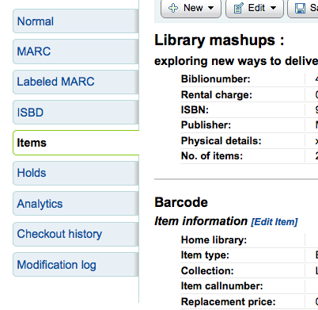
Which will open up the editor on the item you’d like to edit
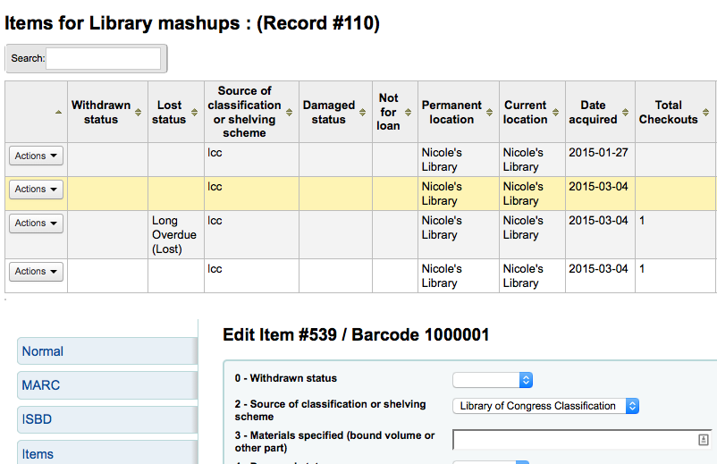
Clicking ‘Edit’ and then ‘Edit items in batch’

This will open up the batch item modification tool where you can edit all of the items on this record as a batch.
You can also enable StaffDetailItemSelection to have checkboxes appear to the left of each item on the detail display. You can then check off the items you would like to edit and click ‘Modify selected items’ at the top of the list.

You can click ‘Edit’ to the right of each item in the Holdings tab

There is also a link to Edit items from the search results in the staff client
Finally you can use the batch item modification tool
Quick item status updates
Often circulation staff need to change the status of an item to Lost or Damaged. This doesn’t require you to edit the entire item record. Instead clicking on the item barcode on the checkout summary or checkin history will bring you to an item summary. You can also get to the item summary by clicking on the Items tab to the left of the bib detail page.
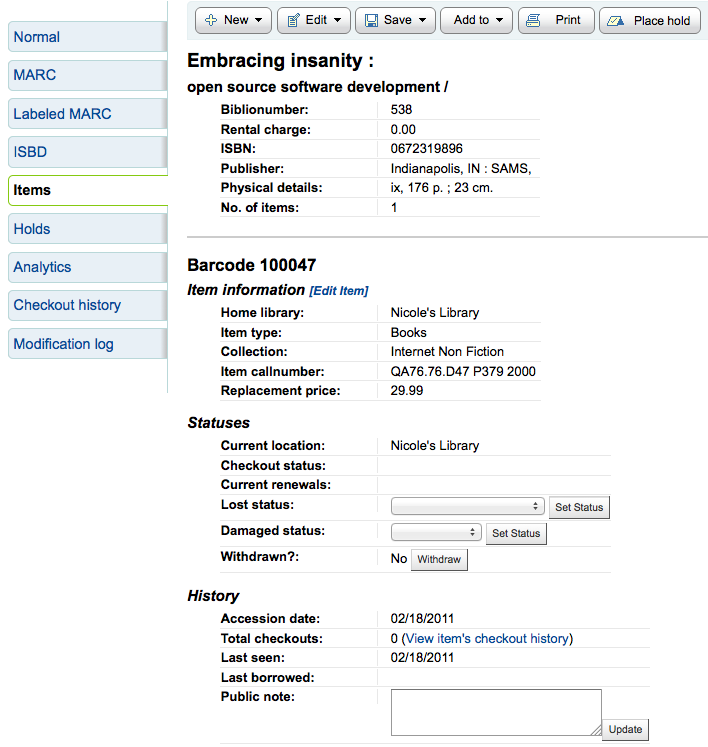
From this view you can mark an item lost by choosing a lost status from the pull down and clicking the ‘Set status’ button.

You can also mark an item as damaged by choosing a damaged status from the pull down and clicking the ‘Set status’ button.

Duplicating items
You can easily duplicate each item by clicking the ‘Actions’ button the left of each item on the edit items screen
From here you can choose to ‘Duplicate’ the item and this will populate the form with the values from the item you chose.
Item information
To the left of every bibliographic record there is a tab to view the items.
Clicking that tab will give you basic information about the items. From here you can see basic information about the item such as the home library, item type, collection code, call number and replacement price. You can also see and edit the status information. If an item is marked lost or withdrawn you will also see the date that status was applied.
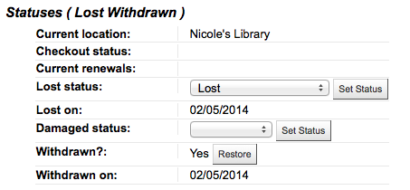
In the ‘History’ section you will see information about the check out history of the item and if you ordered the item via the acquisitions module then this section will include information about the order.

If the Order or Accession date is linked, clicking it will bring you to the acquisitions information for that item.
Adding cover images for items
If you have either OPACLocalCoverImages and/or LocalCoverImages set to ‘Display’ you can upload cover images for individual item records from the ‘Upload image’ option from the Edit button on the right of the Holdings table.

Click Choose file to find the image file on your computer and then Upload file.
On the next screen you are given the option to replace existing images. You can then click on Process images.
The image will display in a Cover image column in the holdings display.

To delete an image, click on the image in the holdings display. You will see a greyed out copy of the image with the option to delete.
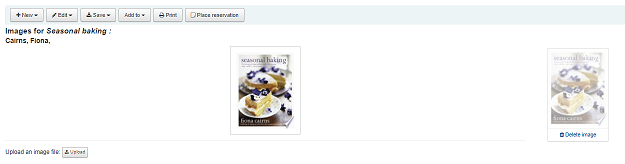
Moving items
Items can be moved from one bibliographic record to another using the ‘Attach item’ option
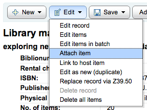
Visit the bibliographic record you want to attach the item to and choose ‘Attach item’ from the ‘Edit’ menu.

Simply enter the barcode for the item you want to move and click ‘Submit’
If this is the last remaining item attached to a bibliographic record you will be presented with a button to delete the original host record.
If you want to move all items to a new record creating only one bibliographic record you can use the merge Records tool instead.
Deleting items
There are many ways to delete item records. If you only need to delete one item you can do this by opening up the detail page for the bib record and clicking the ‘Edit’ button at the top. From there you can choose to ‘Edit items’.

You will be presented with a list of items and next to each one will be a link labeled ‘Delete’. Click that link and if the item is not checked out it will delete that item.

If you know that all of the items attached to your record are not currently checked out you can use the ‘Delete all items’ option under the ‘Edit menu’ and it will remove all items from the record.
You can also enable StaffDetailItemSelection to have checkboxes appear to the left of each item on the detail display. You can then check off the items you would like to delete and click ‘Delete selected items’ at the top of the list.
Finally you can use the batch delete tool to delete a batch of items.
Item specific circulation history
Each bibliographic record keeps a circulation history (with or without the patron information depending on your settings), but each item also has its own circulation history page. To see this, click on the ‘Items’ tab to the left of the record you are viewing.

Below the ‘History’ heading is a link to ‘View item’s checkout history,’ clicking that will open up the item’s history which will look slightly different from the bibliographic record’s history page.

Authorities
Authority records are a way of controlling fields in your MARC records. Using authority records will provide you with control over subject headings, personal names and places.
Adding authorities
To add a new authority record you can either choose the authority type from the ‘New authority’ button or search another library by clicking the ‘New from Z39.50’ button.

If you choose to enter a new authority from scratch, the form that appears will allow you to enter all of the necessary details regarding your authority record.

To expand collapsed values simply click on the title and the subfields will appear. To duplicate a field or subfield just click the plus sign (+) to the right of the label. To use field helper plugins simply click the ellipsis (…) to the right of the field.
When linking authorities to other headings, you can use the authority finder plugin by clicking the ellipsis (…) to the right of the field.

From there you can search your authority file for the authority to link. If you can’t find the authority to link, you can click the ‘Create new’ button and add the necessary authority for the link. This plugin also allows for you to choose the link relationship between the authorities.
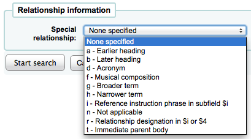
If you choose to search another library for the authority record you will be presented with a search box
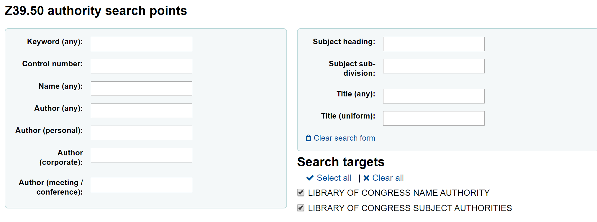
From the results you can choose the ‘Import’ link to the right of the record you would like to add to Koha

You will then be presented with the form to edit the authority before saving it to your system

Searching authorities
From the authorities page you can search for existing terms and the bibliographic records they are attached to.

From the results you will see the authority record, how many bibliographic records it is attached to, an ‘Actions’ menu that includes the ability to edit, merge and delete (if there are no bibliographic records attached).

Clicking on the ‘Details’ link to the right of the authority record summary will open the full record and the option to edit the record.

If the authority has ‘See also’s in it you will see those broken out on the search results, clicking the linked headings will run a search for that heading instead.

Merging authorities
If you have duplicate authority records you can merge them together by clicking the ‘Merge’ link, found in the Actions menu, next to two results on an authority search.

After clicking ‘Merge’ on the first result you will see that authority listed at the top of the results.

Next you need to click ‘Merge’ next to the second result you’d like to merge.
You will be asked which of the two records you would like to keep as your primary record and which will be deleted after the merge.

You will be presented with the MARC for both of the records (each accessible by tabs labeled with the authority numbers for those records). By default the entire first record will be selected, uncheck the fields you don’t want in the final (destination) record and then move on to the second tab to choose which fields should be in the final (destination) record.

Once you have completed your selections click the ‘Merge’ button. The primary record will now contain the data you chose for it and the second record will be deleted.
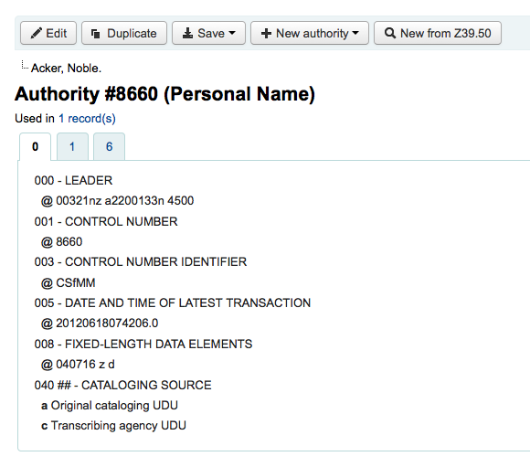
If you have two authority records for the same heading in different frameworks, you can merge them together by clicking the ‘Merge’ link, found in the actions menu, next to two results on an authority search. For example, these authority records using different frameworks can be merged.

If you select the ‘Merge’ link, found in the action menu of the top record.

You will see that authority record listed at the top of the results.

Next you need to select ‘Merge’ next to the second result you’d like to merge.
You will be asked which of the two records you would like to keep as your primary record and which will be deleted after the merge. You will also use the dropdown menu to pick which framework to use.
You will be presented with the MARC for both of the records (each accessible by tabs labeled with the authority numbers for those records). By default the entire first record will be selected, uncheck the fields you don’t want in the final (destination) record and then move on to the second tab to choose which fields should be in the final (destination) record.
The “ref” record (the primary record) will be in the framework that you chose:

Once you have completed your selections click the ‘Merge’ button. The primary record will now contain the data you chose for it and the second record will be deleted.
The MARC tag of the linked headings will have been updated accordingly.

Cataloging guides
Bibliographic record cataloging cheat sheet
Tag |
Label |
Description |
Instructions |
|---|---|---|---|
000 |
LEADER |
Describes the record(i.e. surrogate) – is it a record for a monograph? A serial? |
Click in this field to fill it in. Then set “Bibliographic level” to ‘a’ for articles or ‘s’ for serials. Otherwise, leave everything as is. |
001 |
CONTROL NUMBER |
Accession number. |
Enter the accession number written inside the item here. For articles and items which do not have accession numbers, leave blank. |
003 |
CONTROL NUMBER IDENTIFIER |
Your MARC organizational code |
Click in this field to fill it in (will auto fill if you have your MARCOrgCode preference set). |
005 |
D & T LATEST TRANSACTION |
Current date and time. |
Click in this field to fill it in. |
008 |
FIXED-LENGTH DATA ELEMENTS |
Field containing computer-readable representations of a number of things. |
Generally you will only use ‘s’ (single) or ‘m’ (multiple) options for position 06- use the former when the item was published in a single year, the latter when it was published over the course of several. If there is a single date, only enter a date in the first date field (positions 07-10). Enter the three-digit country code in positions 15-17, being sure to add spaces if the country code is fewer than three characters long. If there is an index, note that fact in position 31. Enter the three-letter language code in positions 35-37. |
010 |
LCCN |
A number assigned by the Library of Congress to uniquely identify the work. |
Check on the copyright page of the book (if it was published in the US) or the LC catalog for this number. If you can’t find it, don’t worry about it. |
020 |
ISBN |
Unique number used by publishers to identify books. |
If this number isn’t listed on the book, there probably isn’t one. |
022 |
ISSN |
Unique number used by publishers to identify serials. |
If this number isn’t listed on the book, there probably isn’t one. |
033 |
DATE/TIME OF EVENT |
Used for auction dates. Required for auction catalogs. |
For auctions that took place on only one day, enter the date of the auction in the format YYYYMMDD in the subfield ‘a’ and a ‘0’ in the first indicator. For auctions that took place over two consecutive days or any number of non-consecutive days, create a subfield ‘a’ for each day with the date in the format YYYYMMDD, and put a ‘1’ in the first indicator. For auctions that took place over more than two consecutive days, create a subfield ‘a’ (in format YYYYMMDD) for the first day and a subfield ‘a’ (also in format YYYYMMDD) for the last day, and put a ‘2’ in the first indicator. |
040 |
CATALOGING SOURCE |
Identifies which libraries created and modified the record. |
For imported records, add a subfield ‘d’ with your OCLC code as the value. For new records, make sure that the subfield ‘c’ with your OCLC code as the value. |
041 |
LANGUAGE CODE |
Identifies all the languages used in an item, when two or more languages are present. |
For significant portions of a text in a given language, there should be a subfield ‘a’ with that language code. If there are only summaries or abstracts in a specific language, create a subfield ‘b’ with that language code. |
100 |
MAIN ENTRY–PERSONAL |
Authorized form of the main author’s name |
See Authorized headings sheet and AACR2. The first indicator should generally be a ‘1’, to indicate that the entry is surname first. If the name consists only of a forename, however, the first indicator should be ‘0’. |
110 |
MAIN ENTRY–CORPORATE |
Authorized form of the name of the main corporate author. Required for auction catalogs. |
Auction catalogs should use a 110 field rather than a 100 field. See Authorized headings sheet and AACR2. Set the first indicator to ‘2’. |
111 |
MAIN ENTRY–MEETING |
Authorized form of the name of a meeting which acted as a main offer (e.g. conference proceedings) |
See Authorized headings sheet and AACR2. Set the first indicator to ‘2’. |
245 |
TITLE STATEMENT |
Transcription of the title statement from the title page (or chief source of information) |
Enter the title in subfield ‘a’, the subtitle in subfield ‘b’, and the statement of responsibility in subfield ‘c’. If you are creating a record for a single volume or part of a multi-part item, you should put the part number in subfield ‘n’ and the part title in subfield ‘p.’ For auction catalogs, the date (in ‘MM/DD/YYYY’ format) should be listed in square brackets in subfield ‘f’. See ISBD punctuation sheet. Set the first indicator to ‘0’ if there is no author, otherwise set it to ‘1’. Set the second indicator to the number of non-filing characters (i.e. characters in an initial articles plus the space… for “The ” set the second indicator to ‘4’). |
246 |
VARYING FORM OF TITLE |
Alternate form of title for searching and filing purposes |
If the patron might look for the work under a different title, enter it here. Do not include initial articles. The first indicator should be ‘3’, unless the title is merely a variant spelling, in which case the first indicator should be ‘1’. |
250 |
EDITION STATEMENT |
Transcription of the edition statement from the title page (or chief source of information) |
Transcribe the edition statement exactly as it appears on the title-page. You may abbreviate if the edition statement is very long. |
260 |
PUBLICATION (IMPRINT) |
Publication information. |
Put the location of publication in subfield ‘a’, the publisher in subfield ‘b’, and the year (or probable year) in subfield ‘c’. See ISBD punctuation sheet. |
264 |
PRODUCTION, PUBLICATION ETC. |
Production, Publication, Distribution, Manufacture, and Copyright Notice. |
Put the location of publication in subfield ‘a’, the publisher in subfield ‘b’, and the year (or probable year) in subfield ‘c’. See ISBD punctuation sheet. The label is set dynamically from the second indicator so generally this would be set to ‘1’ for Publisher: . |
300 |
PHYSICAL DESCRIPTION |
Physical description |
Enter the pagination statement in subfield ‘a’, a brief description of “special” contents such as illustrations or maps in subfield ‘b’ (see AACR2), and the size of the item in subfield ‘c’. See ISBD punctuation sheet. |
490 |
SERIES STATEMENT |
Shows the series statement exactly as it appears on the item. |
Transcribe the series statement into subfield ‘a’ with the volume number in subfield ‘v’. See ISBD punctuation sheet. Set the first indicator to ‘1’ if you are using an 830. As a general rule, you should do so. |
500 |
GENERAL NOTE |
Notes that don’t fit anywhere else. |
Enter notes as full sentences, with a separate 500 field for each distinct topic. |
501 |
WITH NOTE |
Notes whether the work is bound with the works described by other records. |
Put description of relationship in subfield ‘a’. |
504 |
BIBLIOGRAPHY, ETC. NOTE |
Indicates whether the work includes a bibliography. |
If the work includes a bibliography and index, put the text “Includes bibliographical references (p. XXX-XXX) and index.” in subfield ‘a’. If the work does not include an index, remove that part of the sentence. If the references are scattered throughout the work and not gathered into a distinct sentence, remove the parenthetical statement. |
505 |
FORMATTED CONTENTS |
List of contents in a standard format. Unformatted contents can be listed in a 500 (General Note) field. |
See ISBD punctuation sheet. Set the first indicator to ‘0’. If you are separately coding authors and titles, set the second indicator to ‘0’. Otherwise, leave the second indicator blank. |
518 |
DATE/TIME OF EVENT NOTE |
Used for auction dates. |
For auction catalogs, enter the date of the auction in the format ‘January 2, 1984’ in the subfield ‘a’ |
520 |
SUMMARY, ETC. |
A brief summary or abstract of the book or article. |
In general you do not need to write a summary. A summary might be called for, however, with items that cannot be easily reviewed by a patron, such as books with highly acidic paper or CD-ROMs. |
546 |
LANGUAGE NOTE |
Note describing the languages used in the work |
Only needed for works in multiple languages. See ISBD punctuation sheet. |
561 |
PROVENANCE INFORMATION |
Describes the previous ownership of the item. |
Used only for rare books. |
563 |
BINDING INFORMATION |
Describes the binding of the item. |
Used only for rare books. |
590 |
LOCAL NOTE |
Local notes. Required for auction catalogs. |
Used for auction catalogs to indicate what types of coins are sold in the auction- Roman, Greek, etc. |
600 |
SUBJECT ADDED–PERSONAL |
Authorized form of personal names for people discussed in the work |
See Authorized headings sheet and AACR2. The first indicator should generally be a ‘1’, to indicate that the entry is surname first. If the name consists only of a forename, however, the first indicator should be ‘0’. If you found the name in the LC authority file, set the second indicator to ‘0’. Otherwise set the second indicator to ‘4’. |
610 |
SUBJECT ADDED–CORPORATE |
Authorized form of corporate names for organizations discussed in the work |
See Authorized headings sheet and AACR2. Set the first indicator to ‘2’. If you found the name in the LC authority file, set the second indicator to ‘0’. Otherwise set the second indicator to ‘4’. |
611 |
SUBJECT ADDED–MEETING |
Authorized form of meeting names for meetings discussed in the work |
See Authorized headings sheet and AACR2. Set the first indicator to ‘2’. If you found the name in the LC authority file, set the second indicator to ‘0’. Otherwise set the second indicator to ‘4’. |
630 |
SUBJECT ADDED–UNIFORM TITLE |
Authorized form of titles for other works discussed in the work |
See Authorized headings sheet and AACR2. Set the first indicator to the number of non-filing characters (i.e. characters in an initial articles plus the space… for “The ” set the first indicator to ‘4’). If you found the name in the LC authority file, set the second indicator to ‘0’. Otherwise set the second indicator to ‘4’. |
650 |
SUBJECT ADDED–TOPICAL |
Library of Congress Subject Heading terms describing the subject of the work |
See Authorized headings sheet and AACR2. If you found the name in the LC authority file, set the second indicator to ‘0’. Otherwise set the second indicator to ‘4’. |
651 |
SUBJECT ADDED–GEOGRAPHICAL |
Library of Congress Subject Heading geographical terms describing the subject of the work |
See Authorized headings sheet and AACR2. If you found the name in the LC authority file, set the second indicator to ‘0’. Otherwise set the second indicator to ‘4’. |
655 |
INDEX TERM–GENRE/FORM |
Describes what an item is as opposed to what the item is about. |
Generally used only for auction catalogs, which should have the genre heading “Auction catalogs.” (make sure to find the authorized heading!) If you found the name in the LC authority file, set the second indicator to ‘0’. If you are using a term from a specific thesaurus, set the second indicator to ‘7’ and put the code for the thesaurus in subfield ‘2’. Otherwise set the second indicator to ‘4’. |
690 |
LOCAL SUBJECT ADDED–TOPICAL |
Used for headings from any custom subject authority file. |
If there is no appropriate LCSH term, you can use a 690 with subject headings you find on other items in the catalog. |
691 |
LOCAL SUBJECT ADDED–GEOGRAPHICAL |
Used for headings from any custom subject authority file. |
If there is no appropriate LCSH term, you can use a 691 with subject headings you find on other items in the catalog. |
700 |
ADDED ENTRY–PERSONAL |
Used for second authors and other persons related to the production of the work. |
See Authorized headings sheet and AACR2. The first indicator should generally be a ‘1’, to indicate that the entry is surname first. If the name consists only of a forename, however, the first indicator should be ‘0’. |
710 |
ADDED ENTRY–CORPORATE |
Used for corporate bodies related to the production of the work (e.g. publishers). |
See Authorized headings sheet and AACR2. Set the first indicator to ‘2’. |
711 |
ADDED ENTRY–MEETING |
Used for meetings related to the production of the work (e.g. symposia that contributed to the work). |
See Authorized headings sheet and AACR2. Set the first indicator to ‘2’. |
730 |
ADDED ENTRY–UNIFORM TITLE |
Used for uniform titles related to the production of the work (e.g. a work that inspired the present work) |
See Authorized headings sheet and AACR2. Set the first indicator to the number of non-filing characters (i.e. characters in an initial articles plus the space… for “The ” set the first indicator to ‘4’). |
773 |
HOST ITEM ENTRY |
Describes the larger bibliographic unit that contains the work (e.g. book or journal containing the article being described in the current record) |
If the host publication is author main entry, enter the authorized form of the author’s name in subfield ‘a’. Put the title in subfield ‘t’. If the host publication is an independent work, put publication information in subfield ‘d’. When available, ISSN and ISBN should always be used in, in subfields ‘x’ and ‘z’ respectively. Relationship information (e.g. volume number, page number, etc.) goes in subfield ‘g’. Subfield ‘q’ contains an encoded representation of the location of the item: volume, issue, and section numbers are separated by colons, and the first page is entered following a ‘<’ at the end of the subfield. See ISBD punctuation sheet. Set the first indicator to ‘0’. If you want the label “In:” to be generated, leave the second indicator blank. If you want something else displayed before the 773 text, set the second indicator to ‘8’ and add a subfield ‘i’ with the label you want at the beginning of the field (e.g. “$iOffprint from:”). |
830 |
SERIES ENTRY–UNIFORM TITLE |
Authorized form of the series name transcribed in the 490 field. Often this will just be the same as the 490. |
See Authorized headings sheet and AACR2. Set the second indicator to the number of non-filing characters (i.e. characters in an initial articles plus the space… for “The ” set the second indicator to ‘4’). |
852 |
LOCATION/CALL NUMBER |
Provides the section name for pre-barcode books, pamphlets, and some articles and serials. |
Do not put anything in this field if you are cataloging a volume which gets only one record and a barcode. If the item does not get a barcode, or you are currently creating a record for an article in a volume, put the section in subfield ‘a’ (see ANS cataloging documentation), and the call number in subfield ‘i’. Set the first indicator to ‘8’. |
856 |
ELECTRONIC ACCESS |
Links to material available online. |
Put the URL of any electronic copies or summaries, etc. in subfield ‘u’ and a link title in subfield ‘y’. Set the first indicator to ‘4’. |
942 |
ADDED ENTRY ELEMENTS (KOHA) |
Used for Koha-specific data. |
Set the subfield ‘c’ to the appropriate item type. |
Table: Cataloging Guide
Koha-specific fields
Koha uses three fields to store information specific to it.
At the record level, 942 is used to store information such as record-level item type, record-level call number and classification scheme.
The item (holding) information is stored in 952 in MARC21 and 995 in UNIMARC.
System control numbers for Koha are stored in 999 in MARC21 and 090 in UNIMARC.
Added entry elements (942)
942$0 - Koha issues (borrowed), all copies
This field contains the total number of issues/checkouts of all items of this record. It is populated using the update_totalissues.pl cronjob.
Mapped to: biblioitems.totalissues
Indexed in: totalissues
警告
This field should not be editable nor edited manually.
942$2 - Source of classification or shelving scheme
This field contains the source of classification used by the record’s call number (942$h and 942$i).
There is a choice of classification sources as they are defined in administration. If no classification scheme is entered, the system will use the value entered in the DefaultClassificationSource preference.
The source of classification will be used, along with the call number itself (942$h and 942$i) to create the normalized call number used when sorting by call number.
Mapped to: biblioitems.cn_source
Indexed in: cn-bib-source
942$6 - Koha normalized classification for sorting
This field contains the normalized call number used for sorting, based on the record-level call number (942$h and 942$i) and the classification source (942$2).
Mapped to: biblioitems.cn_sort
Indexed in: cn-bib-sort
警告
This field should not be editable nor edited manually.
942$c - Koha item type
This field contains the record-level item type.
The record-level item type is used in various places in Koha.
The value from 942$c is copied to 952$y as the default value when adding a new item to that record
The record-level item type can be used for the circulation rules if the item-level_itypes system preference allows it (this system preference lets you choose between using the record-level or item-level item type for the circulation rules, among other things)
The record-level item type is indexed and used in the search (see also the AdvancedSearchTypes system preference) as well as the facets (this is useful to find records that don’t have items, like records for online resources, ebooks, pdf files, etc.)
The record-level item type is used for record-level/”next available” holds
The record-level item type is used for record-level article requests
The record-level item type is displayed in various tables in the staff interface, in the circulation module among other places (it is possible to hide unwanted columns in the ‘Table settings’ section of the Administration module)
Mapped to: biblioitems.itemtype
Indexed in: itemtype (mc-itemtype), itype (mc-itype)
942$e - Edition
This field contains the edition information.
942$h - Classification part
This field contains classification part of the call number. It is used, along with 942$2 and 942$i to create the normalized call number (942$6) used when sorting by call number.
Mapped to: biblioitems.cn_class
Indexed in: cn-class
942$i - Item part
This field contains item part of the call number. It is used, along with 942$2 and 942$h to create the normalized call number (942$6) used when sorting by call number.
Mapped to: biblioitems.cn_item
Indexed in: cn-item
942$k - Call number prefix
This field contains prefix to the call number.
Mapped to: biblioitems.cn_prefix
Indexed in: cn-prefix
942$m - Call number suffix
This field contains suffix to the call number.
Mapped to: biblioitems.cn_suffix
Indexed in: cn-suffix
942$n - Suppress in OPAC
If the OpacSuppression system preference is set to ‘hide’, this field indicates if the record should be hidden from the OPAC.
In this field, ‘1’ means the record will be hidden in the OPAC, and ‘0’ (or empty) means the record will be visible in the OPAC.
You can use the YES_NO authorized value list in this field if you don’t want to remember the numerical values.
Indexed in: suppress
942$s - Serial record flag
This field is used by the serials module to indicate whether or not the record is associated with a serial subscription.
Mapped to: biblio.serial
警告
This field should not be editable nor edited manually.
Location and item information (952)
Koha uses field 952 to store item (holding) information.
952$0 - Withdrawn status
Uses
This field is used to set the withdrawn (weeded) status of the item.
You can use the withdrawn status to weed items without deleting the items.
In the search results, the withdrawn item will be marked as unavailable.
Effects on circulation
A withdrawn item will not be able to be checked out.
A withdrawn item will not be able to be checked in unless the BlockReturnOfWithdrawnItems system preference allows it.
Values
The withdrawn status is numerical, ‘0’ (or empty) means ‘not withdrawn’ and any other number means ‘withdrawn’.
By default, the field is associated with the WITHDRAWN authorized value category so you don’t have to remember the numerical values. The default values in the WITHDRAWN authorized value category are:
1: Withdrawn
Display
Staff interface
Search results (withdrawn items will be marked as unavailable)
Holdings table in the record’s detail page
‘Items’ tab of the bibliographic record, ‘Withdrawn status’ under ‘Statuses’
OPAC
Search results (withdrawn items will be marked as unavailable)
Holdings table in the record’s detail page
To hide withdrawn items from the OPAC, use the OpacHiddenItems system preference.
Mapped to: items.withdrawn
Indexed in: withdrawn
952$1 - Lost status
Uses
This field is used to set the lost status of the item.
You can use the lost status to mark items as lost or missing
In the search results, the lost item will be marked as unavailable.
Marking an item lost while it is checked out can charge the replacement cost (952$v) to the patron (see WhenLostChargeReplacementFee), as well as a processing fee (the processing fee is set at the item type level)
The lost status can be changed automatically after a number of days overdue with the longoverdue.pl cronjob
Effects on circulation
The ability to check out a lost item depends on the IssueLostItem system preference.
The ability to check in a lost item depends on the BlockReturnOfLostItems system preference.
Values
The lost status is numerical, ‘0’ (or empty) means ‘not lost’ and any other number means ‘lost’.
By default, the field is associated with the LOST authorized value category so you don’t have to remember the numerical values. The default values in the LOST authorized value category are:
1: Lost
2: Long Overdue (Lost)
3: Lost and Paid For
4: Missing
Display
Staff interface
Search results (lost items will be marked as unavailable)
Holdings table in the record’s detail page
‘Items’ tab of the bibliographic record, ‘Lost status’ under ‘Statuses’
OPAC
Search results (lost items will be marked as unavailable)
Holdings table in the record’s detail page
It’s possible to configure Koha so that lost items don’t display in the OPAC with the hidelostitems system preference.
Mapped to: items.itemlost
Indexed in: lost
952$2 - Source of classification or shelving scheme
Uses
This field contains the source of classification used by the record’s call number (952$o).
The source of classification will be used, along with the call number itself (952$o) to create the normalized call number (952$6) used when sorting by call number.
Values
There is a choice of classification sources as they are defined in administration.
If no classification scheme is entered, the system will use the value entered in the DefaultClassificationSource preference.
Display
This is not displayed either in the OPAC or in the staff interface. The information is only available in the item’s editing form.
Mapped to: items.cn_source
Indexed in: classification-source
952$3 - Materials specified
Uses
This field is used to add information about accompanying materials or to specify how many pieces the item has.
Effects on circulation
This information will be displayed when circulation the item so that the circulation staff knows to make sure all the accompanying material is there when checkout out and it’s still there when checking the item back in.

Values
This is a free text field, but it is possible to associate it to an authorized value category in the MARC framework to make it into a drop-down menu.
Display
Staff interface
This information will appear when checking out or checking in an item
Holdings table in the record’s detail page
注解
Use ‘Table settings’ if you want to hide that column - Module: Catalogue - Table id: holdings_table and/or otherholdings_table - Column: holdings_materials or otherholdings_materials
‘Items’ tab of the bibliographic record, ‘Materials specified’ under ‘Item information’
OPAC
Holdings table in the record’s detail page (it is hidden by default)
注解
Use ‘Table settings’ if you want to show that column - Module: OPAC - Table id: holdingst - Column: item_materials
Mapped to: items.materials
Indexed in: materials-specified
952$4 - Damaged status
Uses
This field is used to set the damaged status of the item.
In the search results, the damaged item will be marked as unavailable.
Effects on circulation
The damaged status does not affect the ability to check out or check in an item.
The AllowHoldsOnDamagedItems system preference indicates whether or not damaged items can be put on hold.
Values
The damaged status is numerical, ‘0’ (or empty) means ‘not damaged’ and any other number means ‘damaged’.
By default, the field is associated with the DAMAGED authorized value category so you don’t have to remember the numerical values. The default values in the DAMAGED authorized value category are:
1: Damaged
Display
Staff interface
Search results (damaged items will be marked as unavailable)
Holdings table in the record’s detail page
‘Items’ tab of the bibliographic record, ‘Damaged status’ under ‘Statuses’
OPAC
Search results (damaged items will be marked as unavailable)
Holdings table in the record’s detail page
To hide damaged items from the OPAC, use the OpacHiddenItems system preference.
Mapped to: items.damaged
Indexed in: damaged
952$5 - Use restrictions
Uses
This field is used to set the restricted status of the item.
In the search results, the restricted item will be marked as available.
Effects on circulation
A restricted item will not be able to be checked out.
Values
The restricted status is numerical, ‘1’ means restricted and ‘0’ (or empty) means unrestricted.
注解
Unlike other statuses, the restricted status can only be 0 (not restricted) or 1 (restricted).
By default, the field is associated with the RESTRICTED authorized value category so you don’t have to remember the numerical values. The default values in the RESTRICTED authorized value category are:
1: Access Restricted
Display
Staff interface
Search results (restricted items will be marked as available)
Holdings table in the record’s detail page
OPAC
Search results (restricted items will be marked as available)
Holdings table in the record’s detail page
Mapped to: items.restricted
Indexed in: restricted
952$6 - Koha normalized classification for sorting
警告
This field should not be editable nor edited manually.
Uses
This field contains the normalized call number used for sorting, based on the item-level call number (952$o) and the classification source (952$2).
Display
This information is not displayed anywhere in the OPAC or in the staff interface, it is for Koha’s internal use only.
Mapped to: items.cn_sort
Indexed in: cn-sort
952$7 - Not for loan status
Uses
This field is used to set the not for loan status of the item.
In the search results, the not for loan item will be marked as unavailable or for reference use only (see Reference_NFL_Statuses)
Effects on circulation
Items with a not for loan status cannot be checked out (unless AllowNotForLoanOverride allows it)
Depending on the value, items may or may not be put on hold (see below)
Depending on TrapHoldsOnOrder and SkipHoldTrapOnNotForLoanValue not for loan items may be used to fill holds
The UpdateNotForLoanStatusOnCheckin system preference can be used to automatically change not for loan values upon checkin
Values
The not for loan status is numerical, ‘0’ (or empty) means available.
Negative values (< 0) mean that the item cannot be checked out, but can be put on hold.
Positive values (> 0) mean that the item cannot be checked out nor be put on hold.
By default, the field is associated with the NOT_LOAN authorized value category so you don’t have to remember the numerical values. The default values in the NOT_LOAN authorized value category are:
-1: Ordered
1: Not For Loan
2: Staff Collection
Display
Staff interface
Search results (not for loan item will be marked as unavailable or for reference use only (see Reference_NFL_Statuses))
Holdings table in the record’s detail page
‘Items’ tab of the bibliographic record, ‘Withdrawn status’ under ‘Statuses’
OPAC
Search results (not for loan item will be marked as unavailable or for reference use only (see Reference_NFL_Statuses))
Holdings table in the record’s detail page
To hide not for loan items from the OPAC, use the OpacHiddenItems system preference.
Mapped to: items.notforloan
Indexed in: notforloan
952$8 - Collection
Uses
This field is used to set the collection of the item.
Collections in Koha are used to group items in ways other than physically (the physical location can be stored in 952$c). An example of a collection could be ‘Local authors’.
Collections can also be used to limit transfers in multi-branch systems (see the Library transfer limits section of the administration) if BranchTransferLimitsType is set to ‘collection code’
The collection of an item is used in the search (see the AdvancedSearchTypes system preference) as well as the facets.
Values
By default, the field is associated with the CCODE authorized value category. The default values in the CCODE authorized value category are:
FIC: Fiction
NFIC: Non-fiction
REF: Reference
Display
Staff interface
The collections will be part of the facets in the search results
Holdings table in the record’s detail page
注解
Use ‘Table settings’ if you want to hide that column - Module: Catalogue - Table id: holdings_table and/or otherholdings_table - Column: holdings_ccode or otherholdings_ccode
Checkouts table in the patron’s file
注解
Use ‘Table settings’ if you want to hide that column - Module: Circulation and Patrons - Table id: issues-table - Column: collection
Many other places all throughout Koha
OPAC
Search results, if OpacItemLocation allows it
The collections will be part of the facets in the search results
Holdings table in the record’s detail page
注解
Use ‘Table settings’ if you want to hide that column - Module: OPAC - Table id: holdingst - Column: item_ccode
Many other places throughout the OPAC
Mapped to: items.ccode
Indexed in: collection-code
952$9 - Itemnumber
警告
This field should not be editable nor edited manually.
Uses
The itemnumber is the internal number assigned to each item by Koha. It is unique and cannot be reattributed even when the item is deleted.
Display
This information is not displayed anywhere in the OPAC or in the staff interface, it is for Koha’s internal use only.
Mapped to: items.itemnumber
Indexed in: itemnumber
952$a - Home library
Required
Uses
This field indicates the home library of the item.
The home library is important for many things in Koha, including, but not limited to
The home library of an item is used in the search as well as the facets (see the DisplayLibraryFacets system preference)
Effects on circulation
As previously stated, the circulation rules are based on the item’s library (see the HomeOrHoldingBranch system preference)
Values
Libraries are defined in the libraries section of the administration page.
Display
Staff interface
Depending on the DisplayLibraryFacets system preference, the home library may be part of the facets in the search results
Holdings table in the record’s detail page
注解
Use ‘Table settings’ if you want to hide that column - Module: Catalogue - Table id: holdings_table and/or otherholdings_table - Column: holdings_homebranch or otherholdings_homebranch
This information is displayed in the staff interface, in the ‘Items’ tab of the bibliographic record, ‘Home library’ under ‘Item information’
Checkouts table in the patron’s file
注解
Use ‘Table settings’ if you want to hide that column - Module: Circulation and Patrons - Table id: issues-table - Column: homebranch
Many other places all throughout Koha
OPAC
Search results (if OpacItemLocation allows it)
Depending on the DisplayLibraryFacets system preference, the home library may be part of the facets in the search results
Holdings table in the record’s detail page, if OpacLocationBranchToDisplay allows it
注解
Use ‘Table settings’ if you want to hide that column - Module: OPAC - Table id: holdingst - Column: item_home_location
Many other places throughout the OPAC
Mapped to: items.homebranch
Indexed in: homelibrary
952$b - Current library
Required
Uses
This field indicates the current library (holding library) of the item.
The current library is important for many things in Koha, including
The current library of an item is used in the search as well as the facets (see the DisplayLibraryFacets system preference)
Effects on circulation
As previously stated, the circulation rules are based on the item’s library (see the HomeOrHoldingBranch system preference)
Values
Libraries are defined in the libraries section of the administration page.
Display
Staff interface
Depending on the DisplayLibraryFacets system preference, the holding library may be part of the facets in the search results
Holdings table in the record’s detail page
注解
Use ‘Table settings’ if you want to hide that column - Module: Catalogue - Table id: holdings_table and/or otherholdings_table - Column: holdings_holdingbranch or otherholdings_holdingbranch
This information is displayed in the staff interface, in the ‘Items’ tab of the bibliographic record, ‘Current library’ under ‘Item information’
Many other places all throughout Koha
OPAC
Search results (if OpacItemLocation allows it)
Depending on the DisplayLibraryFacets system preference, the holding library may be part of the facets in the search results
Holdings table in the record’s detail page, if OpacLocationBranchToDisplay allows it
注解
Use ‘Table settings’ if you want to hide that column - Module: OPAC - Table id: holdingst - Column: item_current_location
Many other places throughout the OPAC
Mapped to: items.holdingbranch
Indexed in: holdinglibrary
952$c - Shelving location
Uses
This field indicates the location of the item (physical place in the library).
Shelving locations in Koha are used to group items physically. An example of a shelving location could be ‘Children’s section’.
The location of an item is used in the search (see the AdvancedSearchTypes system preference) as well as the facets.
The UpdateItemLocationOnCheckin system preference can be used to automatically change location values upon checkin
Values
By default, the field is associated with the LOC authorized value category. The default values in the LOC authorized value category are:
FIC: Fiction
CHLID: Children’s Area
DISPLAY: On Display
NEW: New Materials Shelf
STAFF: Staff Office
GEN: General Stacks
AV: Audio Visual
REF: Reference
CART: Book Cart
PROC: Processing Center
The default value for new items can be set using the NewItemsDefaultLocation system preference
Display
Staff interface
The locations will be part of the facets in the search results
Holdings table in the record’s detail page (under the home library)
This information is displayed in the staff interface, in the ‘Items’ tab of the bibliographic record, ‘Home library’ under ‘Item information’
Checkouts table in the patron’s file
注解
Use ‘Table settings’ if you want to hide that column - Module: Circulation and Patrons - Table id: issues-table - Column: location
Many other places all throughout Koha
OPAC
Search results (if OpacItemLocation allows it)
The locations will be part of the facets in the search results
Holdings table in the record’s detail page, the OpacLocationOnDetail system preference indicates in which column this information is located
注解
Use ‘Table settings’ if you want to hide that column - Module: OPAC
Table id: holdingst
Column: item_shelving_location (if OpacLocationOnDetail is set to ‘separate column’)
Many other places throughout the OPAC
Mapped to: items.location
Indexed in: location
952$d - Date acquired
Uses
This field is used to enter the date of acquisition of the item.
The acquisition date can be used in the search and the sort function in the search results
When using the Acquisitions module, this should be filled automatically with the acquisition date
Values
This should be a date in the YYYY-MM-DD format (there is a handy date picker to ensure the date is in the correct format)
Display
Staff interface
Holdings table in the record’s detail page
注解
Use ‘Table settings’ if you want to hide that column - Module: Catalogue - Table id: holdings_table and/or otherholdings_table - Column: holdings_dateaccessioned or otherholdings_dateaccessioned
‘Items’ tab of the bibliographic record, ‘Accession date’ under ‘History’
Mapped to: items.dateaccessioned
Indexed in: date-of-acquisition
952$e - Source of acquisition
Uses
This field is used to enter the vendor where the item was acquired
When using the Acquisitions module, this should be filled automatically with the vendor upon receiving
Values
This is a free text field
If using the Acquisitions field, the value in this field will be the vendor id rather than the vendor’s name
Display
This is not displayed either in the OPAC or in the staff interface. The information is only available in the item’s editing form.
Mapped to: items.booksellerid
Indexed in: acqsource
952$f - Coded location qualifier
Uses
This field is used to enter a three-character code that identifies the specific issues of the item that are located apart from the main holdings of the same item (same as MARC21 852$f).
Values
This is a free text field
The field in the database is limited to 10 characters
Display
This is not displayed either in the OPAC or in the staff interface. The information is only available in the item’s editing form.
Mapped to: items.coded_location_qualifier
Indexed in: coded-location-qualifier
952$g - Cost, normal purchase price
Uses
This field is used to enter the purchase price of the item
When using the Acquisitions module, this should be filled automatically with the purchase price upon receiving
Values
This is a free text field
The price must be digits, with a period as the decimal, with no currency symbols (e.g. 24.95)
The field in the database limits to two decimal points (e.g. 24.95 is ok but 24.94875 is not)
Display
This is not displayed either in the OPAC or in the staff interface. The information is only available in the item’s editing form.
Mapped to: items.price
Indexed in: price
952$h - Serial enumeration / chronology
Uses
This field is used to enter the issue number of serials or the volume number of series
When using the Serials module, this should be filled automatically with the issue number
Values
This is a free text field
Display
Staff interface
Holdings table in the record’s detail page
注解
Use ‘Table settings’ if you want to hide that column - Module: Catalogue - Table id: holdings_table and/or otherholdings_table - Column: holdings_enumchron or otherholdings_enumchron
‘Items’ tab of the bibliographic record, ‘Serial enumeration’ under ‘History’
OPAC
Holdings table in the record’s detail page
注解
Use ‘Table settings’ if you want to hide that column - Module: OPAC - Table id: holdingst - Column: item_enumchron
Mapped to: items.enumchron
952$i - Inventory number
Uses
This field is used to enter an inventory number for the item
注解
The inventory number is not Koha’s internal itemnumber (which is stored in 952$9)
Values
This is a free text field
The field in the database is limited to 32 characters
Display
Staff interface
Holdings table in the record’s detail page
注解
Use ‘Table settings’ if you want to hide that column - Module: Catalogue - Table id: holdings_table and/or otherholdings_table - Column: holdings_stocknumber or otherholdings_stocknumber
Mapped to: items.stocknumber
Indexed in: number-local-acquisition
952$j - Shelving control number
Uses
This field is used to enter a shelf number where the item is located
Values
The stack number should be numerical
By default, the field is associated with the STACK authorized value category so you don’t have to remember the numerical values. There are no default values.
Display
This is not displayed either in the OPAC or in the staff interface. The information is only available in the item’s editing form.
Mapped to: items.stack
Indexed in: stack
952$l - Total checkouts
警告
This field should not be editable nor edited manually.
Uses
This field contains the total number of past and present issues/checkouts of this item
The number of issues is used to sort search results by popularity
The number of issues for each item is used to update the total number of issues for the record (942$0)
Display
Staff interface
‘Items’ tab of the bibliographic record, ‘Total checkouts’ under ‘History’
Mapped to: items.issues
Indexed in: issues
952$m - Total renewals
警告
This field should not be editable nor edited manually.
Uses
This field contains the total number of past renewals of this item
Display
Staff interface
‘Items’ tab of the bibliographic record, ‘Current renewals’ under ‘Statuses’
Mapped to: items.renewals
Indexed in: renewals
952$n - Total holds
警告
This field should not be editable nor edited manually.
Uses
This field contains the total number of past and present holds on this item
The number of holds is used to create a RSS feed for most reserved items
Display
This is not displayed either in the OPAC or in the staff interface.
Mapped to: items.renewals
Indexed in: renewals
952$o - Full call number
Uses
This field is used to store the item’s call number
The call number of an item can used in the search
Values
The records call number can be copied into the item’s call number, the itemcallnumber system preference indicates which record field to use as the source
Display
Staff interface
Holdings table in the record’s detail page
注解
Use ‘Table settings’ if you want to hide that column - Module: Catalogue - Table id: holdings_table and/or otherholdings_table - Column: holdings_itemcallnumber or otherholdings_itemcallnumber
‘Items’ tab of the bibliographic record, ‘Item callnumber’ under ‘Item information’
Checkouts table in the patron’s file
注解
Use ‘Table settings’ if you want to hide that column - Module: Circulation and Patrons - Table id: issues-table - Column: callno
Many other places all throughout Koha
OPAC
Search results, if OpacItemLocation allows it
Holdings table in the record’s detail page
注解
Use ‘Table settings’ if you want to hide that column - Module: OPAC - Table id: holdingst - Column: item_callnumber
Checkouts table in the patron’s online account
Many other places throughout the OPAC
Mapped to: items.itemcallnumber
Indexed in: local-classification
952$p - Barcode
Required for circulation
Uses
This field is used to store the item’s barcode
The barcode of an item can used in the search
Effects on circulation
The barcode is essential for circulating items
Values
This should be a date in the YYYY-MM-DD format (there is a handy date picker to ensure the date is in the correct format)
This is a free text field
The field in the database is limited to 20 characters
Display
Staff interface
Holdings table in the record’s detail page
注解
Use ‘Table settings’ if you want to hide that column - Module: Catalogue - Table id: holdings_table and/or otherholdings_table - Column: holdings_barcode or otherholdings_barcode
‘Items’ tab of the bibliographic record
Checkouts table in the patron’s file (in the title column)
Mapped to: items.barcode
Indexed in: barcode
952$q - Date due
警告
This field should not be editable nor edited manually.
Uses
When the item is checked out, the due date is stored in this field (YYYY-MM-DD)
This field is used in the ‘Limit to currently available items’ in the facets
Display
The due date appears in a lot of pages in the circulation module, but it is the due date that comes from the issues, not the item
Mapped to: items.onloan
Indexed in: onloan
952$r - Date last seen
警告
This field should not be editable nor edited manually.
Uses
When the item is checked out or in, edited, inventoried, or during any other transaction that affects the item, the date is stored in this field (YYYY-MM-DD)
Display
Staff interface
Holdings table in the record’s detail page
注解
Use ‘Table settings’ if you want to hide that column - Module: Catalogue - Table id: holdings_table and/or otherholdings_table - Column: holdings_lastseen or otherholdings_lastseen
‘Items’ tab of the bibliographic record, ‘Last seen’ under ‘History’
Mapped to: items.datelastseen
Indexed in: datelastseen
952$s - Date last checked out
警告
This field should not be editable nor edited manually.
Uses
When the item is checked out, the date is stored in this field (YYYY-MM-DD)
Display
Staff interface
Holdings table in the record’s detail page
注解
Use ‘Table settings’ if you want to hide that column - Module: Catalogue - Table id: holdings_table and/or otherholdings_table - Column: holdings_datelastborrowed or otherholdings_datelastborrowed
‘Items’ tab of the bibliographic record, ‘Last borrowed’ under ‘History’
Mapped to: items.datelastborrowed
Indexed in: datelastborrowed
952$t - Copy number
Uses
This field is used to enter the copy number of the item
Values
This is a free text field
The field in the database is limited to 32 characters
Display
Staff interface
Holdings table in the record’s detail page
注解
Use ‘Table settings’ if you want to hide that column - Module: Catalogue - Table id: holdings_table and/or otherholdings_table - Column: holdings_copynumber or otherholdings_copynumber
‘Items’ tab of the bibliographic record, ‘Copy number’ under ‘History’
OPAC
Holdings table in the record’s detail page
注解
Use ‘Table settings’ if you want to hide that column - Module: OPAC - Table id: holdingst - Column: item_copy
Mapped to: items.copynumber
Indexed in: copynumber
952$u - URI
Uses
This field is used to enter a URL or URN specific to the item
It is not necessary to enter a URL here if there is already a URL in 856$u at the record-level, unless the URL for the specific item differs from the one in 856$u (for example, if you have an online periodical, you can put the URL to the periodical in 856$u and the URL to the specific issue in 952$u)
Values
Display
Staff interface
Holdings table in the record’s detail page
注解
Use ‘Table settings’ if you want to hide that column - Module: Catalogue - Table id: holdings_table and/or otherholdings_table - Column: holdings_uri or otherholdings_uri
OPAC
Holdings table in the record’s detail page
注解
Use ‘Table settings’ if you want to hide that column - Module: OPAC - Table id: holdingst - Column: item_url
Mapped to: items.uri
Indexed in: uri
952$v - Cost, replacement price
Uses
This field is used to enter the replacement cost that will be charged to the patron who loses the item
When using the Acquisitions module, this should be filled automatically with the replacement price upon receiving
Values
This is a free text field
The price must be digits, with a period as the decimal, with no currency symbols (e.g. 24.95)
The field in the database limits to two decimal points (e.g. 24.95 is ok but 24.94875 is not)
Display
Staff interface
Checkouts table in the patron’s file (in the price column)
注解
Use ‘Table settings’ if you want to hide that column - Module: Circulation and Patrons - Table id: issues-table - Column: price
‘Items’ tab of the bibliographic record, ‘Replacement price’ under ‘Item information’
Mapped to: items.replacementprice
Indexed in: replacementprice
952$w - Price effective from
Uses
This field is used to enter the date of the replacement price of the item
When using the Acquisitions module, this should be filled automatically with the acquisition date upon receiving
If left empty, it will default to the acquisition date (952$d)
Values
This should be a date in the YYYY-MM-DD format
Display
This is not displayed either in the OPAC or in the staff interface. The information is only available in the item’s editing form.
Mapped to: items.replacementpricedate
Indexed in: replacementpricedate
952$x - Non-public note
Uses
This field is used to enter internal notes about the item
Values
This is a free text field
Display
Staff interface
Holdings table in the record’s detail page
注解
Use ‘Table settings’ if you want to hide that column - Module: Catalogue
Table id: holdings_table and/or otherholdings_table
Column: holdings_itemnotes_nonpublic or otherholdings_itemnotes_nonpublic
‘Items’ tab of the bibliographic record, ‘Non-public note’ under ‘History’
Mapped to: items.itemnotes_nonpublic
952$y - Koha item type
Required
Uses
This field contains the item-level item type.
The item-level item type is used in various places in Koha.
The item-level item type is generally used for the circulation rules unless the item-level_itypes system preference is set to use the record-level item type (this system preference lets you choose between using the record-level or item-level item type for the circulation rules, among other things)
The item-level item type is indexed and used in the search (see also the AdvancedSearchTypes system preference) as well as the facets
Effects on circulation
The item type is used as the basis for circulation rules, it will affect the number of items a patron can take out at the same time, number of holds, etc.)
Values
The values are managed in item types
Display
Staff interface
The itemtypes will be part of the facets in the search results
Holdings table in the record’s detail page
注解
Use ‘Table settings’ if you want to hide that column - Module: Catalogue - Table id: holdings_table and/or otherholdings_table - Column: holdings_itype or otherholdings_itype
‘Items’ tab of the bibliographic record, ‘Item type’ under ‘Item information’
Checkouts table in the patron’s file
注解
Use ‘Table settings’ if you want to hide that column - Module: Circulation and Patrons - Table id: issues-table - Column: item_type
Many other places all throughout Koha
OPAC
The item types will be part of the facets in the search results
Holdings table in the record’s detail page
注解
Use ‘Table settings’ if you want to hide that column - Module: OPAC - Table id: holdingst - Column: item_itemtype
Many other places throughout the OPAC
Mapped to: items.itype
Indexed in: itemtype (mc-itemtype), itype (mc-itype)
952$z - Public note
Uses
This field is used to enter notes about the item
Values
This is a free text field
Display
Staff interface
Holdings table in the record’s detail page
注解
Use ‘Table settings’ if you want to hide that column - Module: Catalogue - Table id: holdings_table and/or otherholdings_table - Column: holdings_itemnotes or otherholdings_itemnotes
‘Items’ tab of the bibliographic record, ‘Public note’ under ‘History’
OPAC
Holdings table in the record’s detail page
注解
Use ‘Table settings’ if you want to hide that column - Module: OPAC - Table id: holdingst - Column: item_notes
Mapped to: items.itemnotes
Indexed in: note
System control numbers (999)
Koha stores its system control numbers in the 999 field in MARC21 and in the 090 field in UNIMARC.
注解
The itemnumber is stored in 952$9 (see above).
999$c - Biblionumber
The biblionumber is the internal number assigned to each record by Koha. It is unique and cannot be reattributed even when the record is deleted.
Mapped to: biblio.biblionumber
Indexed in: local-number (sn, biblionumber)
警告
This field should not be editable nor edited manually.
注解
In UNIMARC, the biblionumber is stored in the 090$9 subfield.
999$d - Biblioitemnumber
The biblioitemnumber is the internal number assigned to each record by Koha. It is unique and cannot be reattributed even when the record is deleted.
Mapped to: biblioitems.biblioitemnumber
Indexed in: biblioitemnumber
警告
This field should not be editable nor edited manually.
注解
In UNIMARC, the biblioitemnumber is stored in the 090$a subfield.
Koha XSLT material type icons
When you have any of the XSLT system preferences (OPACXSLTDetailsDisplay, OPACXSLTResultsDisplay, XSLTDetailsDisplay, and/or XSLTResultsDisplay) along with the DisplayOPACiconsXSLT and DisplayIconsXSLT preferences turned on you will see material type icons on the related screen.
Important
These images are coming from values found in your leader, if your leader is not cataloged properly it might be best to turn off the DisplayOPACiconsXSLT preference (which can be done while leaving the other XSLT preferences turned on).

Book [BK]
leader6 = a (and one of the leader7 values below)
leader7 = a
leader7 = c
leader7 = d
leader7 = m
leader6 = t
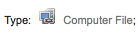
Computer File [CF]
leader6 = m

Continuing Resource [CR]
leader7 = b
leader7 = i
leader7 = s
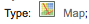
Map [MP]
leader6 = e
leader6 = f

Mixed [MX]
leader6 = p

Sound [MU]
leader6 = c
leader6 = d
leader6 = i
leader6 = j
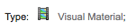
Visual Material [VM]
leader6 = g
leader6 = k
leader6 = r

Kit
leader6 = o
Handling On Order Items and Holds
If you tend to import your MARC records when you have ordered the book (as opposed to when you receive the books), and allow patrons to place holds on those books, you may need to add item records to the *.mrc file before importing.
The easiest way to import your latest order is to first run your records through MARCEdit. Download your MARC records, saving them to your desktop or some other location you use/will remember. If you have MARCEdit already installed you should simply have to double click on your MARC records, and they will automatically open in MARCEdit.
Important
This tutorial was written with MARCEdit version 5.2.3769.41641 on Windows XP, instructions may be different if your version or operating system is different.
Your original file will automatically be in the input; ensure MarcBreaker is chosen, and then click “Execute”

You will be presented with a summary of the records processed at the bottom of the screen

Click ‘Edit Records’ to continue on to adding item records
Your screen will be replaced with a larger screen containing the MARC records

Click on Tools > Add/Edit Field

Enter in the Koha specific item info

In the Field box, type 942
In the Field Data box, type \\$c and the item type code (\\$cBOOK in this example)
Check the ‘Insert last’ option
Click ‘Add Field’
Enter in the item record data

In the Field box, type 952
In the Field Data box, type $7ORDERED_STATUS$aPERM_LOC$bCURR_LOC$cSHELVING_LOCATION$eSOURCE_OF_ACQ$yITEM_TYPE
ex. $7-1$aCPL$bCPL$cNEW$eBrodart$yBOOK
In a default install of Koha -1 is the value for the Ordered status
You may want to look at other subfields you would like data in – for example, changing the collection code to put all the items in the same collection (8), automatically fill in the acquisition date (d), or put in a public note (z).
Be sure you use the $ to separate subfields; adding each subfield on a separate line will cause that many items to be imported with your MARC record (in the example above, four items, each with one of those subfields corrected)
Make sure you look at the Administration > Authorized Values in Koha to put the correct code into the field
Check the ‘Insert last’ option
Click ‘Add Field’
Close the field editor window
Click on File > Compile into MARC

Choose where to save your file
Now you want to go into your Koha system and follow the instructions for importing MARC records.
Once the item has come in, you will need to go to the item record and individually change the item to have the correct barcode, and manually change the status from Ordered to the blank line in the Not for Loan field.
Note
If you purchase your cataloged item records, you may want to request your vendor put in the information you need into the MARC records for you; that way, you could import the edited-by-the-vendor file, overwriting the current record, automatically replacing the data with what you need.